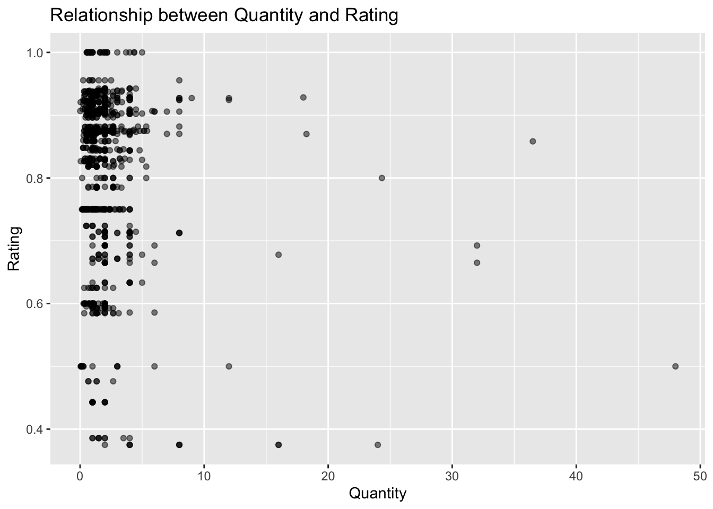
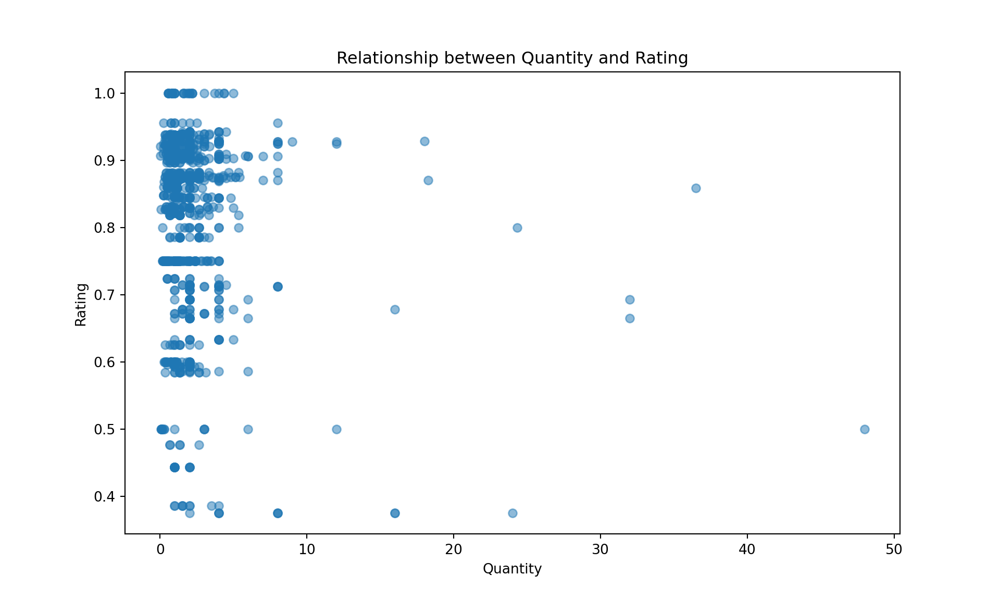

cookie<-read.csv("choc_chip_cookie_ingredients.csv")
library(reticulate)Chocolate Chip Cookies
Reading In the Data
First, read in the CSV data of cookie ingredients. Make sure that your end-result data has appropriate types for each column - these should match the types provided in the documentation in the README.md file.
import pandas as pd
cookies = pd.read_csv('choc_chip_cookie_ingredients.csv')Exploratory Data Analysis
Exploratory data analysis is the process of getting familiar with your dataset. To get started, this blog post provides a nice checklist to get you thinking:
- What question(s) are you trying to solve (or prove wrong)?
- What kind of data do you have and how do you treat different types?
- What’s missing from the data and how do you deal with it?
- Where are the outliers and why should you care about them?
- How can you add, change or remove features to get more out of your data?
Generating Questions
Generate at least 5 questions you might explore using this database of cookie ingredients.
- What is the distribution of ratings across all recipes?
- Are there any missing values, if so how many?
- How does the number of ingredients in a recipe relate to its rating?
- What are the most commonly used ingredients in high rated recipes?
- Do different measurement quantities correlate with recipe ratings?
Skimming the Data
One thing we often want to do during EDA is to examine the quality of the data - are there missing values? What quirks might exist in the dataset?
The skimr package in R, and the similar skimpy package in python (which has a much better name, in my opinion), can help provide visual summaries of the data.
Install both packages, and read the package documentation (R, Python).
[Part 1] Use each package and generate summaries of your data that require the use of at least some non-default options in each package’s skim function.
library(skimr)
skim(cookie)| Name | cookie |
| Number of rows | 1990 |
| Number of columns | 7 |
| _______________________ | |
| Column type frequency: | |
| character | 4 |
| numeric | 3 |
| ________________________ | |
| Group variables | None |
Variable type: character
| skim_variable | n_missing | complete_rate | min | max | empty | n_unique | whitespace |
|---|---|---|---|---|---|---|---|
| Ingredient | 0 | 1 | 3 | 26 | 0 | 68 | 0 |
| Text | 0 | 1 | 7 | 252 | 0 | 1273 | 0 |
| Recipe_Index | 0 | 1 | 4 | 8 | 0 | 209 | 0 |
| Unit | 0 | 1 | 3 | 10 | 0 | 5 | 0 |
Variable type: numeric
| skim_variable | n_missing | complete_rate | mean | sd | p0 | p25 | p50 | p75 | p100 | hist |
|---|---|---|---|---|---|---|---|---|---|---|
| X | 0 | 1.00 | 995.50 | 574.61 | 1.00 | 498.25 | 995.50 | 1492.75 | 1990 | ▇▇▇▇▇ |
| Rating | 1010 | 0.49 | 0.81 | 0.14 | 0.38 | 0.75 | 0.87 | 0.91 | 1 | ▁▂▃▆▇ |
| Quantity | 0 | 1.00 | 2.23 | 2.53 | 0.00 | 1.00 | 1.64 | 2.67 | 48 | ▇▁▁▁▁ |
from skimpy import skim
skim(cookies)╭─────────────────────────────── skimpy summary ───────────────────────────────╮
│ Data Summary Data Types │
│ ┏━━━━━━━━━━━━━━━━━━━┳━━━━━━━━┓ ┏━━━━━━━━━━━━━┳━━━━━━━┓ │
│ ┃ Dataframe ┃ Values ┃ ┃ Column Type ┃ Count ┃ │
│ ┡━━━━━━━━━━━━━━━━━━━╇━━━━━━━━┩ ┡━━━━━━━━━━━━━╇━━━━━━━┩ │
│ │ Number of rows │ 1990 │ │ string │ 4 │ │
│ │ Number of columns │ 7 │ │ float64 │ 2 │ │
│ └───────────────────┴────────┘ │ int64 │ 1 │ │
│ └─────────────┴───────┘ │
│ number │
│ ┏━━━━━━┳━━━━━━┳━━━━━━┳━━━━━━┳━━━━━━┳━━━━━━┳━━━━━┳━━━━━━┳━━━━━┳━━━━━━┳━━━━━┓ │
│ ┃ colu ┃ ┃ ┃ ┃ ┃ ┃ ┃ ┃ ┃ ┃ his ┃ │
│ ┃ mn ┃ NA ┃ NA % ┃ mean ┃ sd ┃ p0 ┃ p25 ┃ p50 ┃ p75 ┃ p100 ┃ t ┃ │
│ ┡━━━━━━╇━━━━━━╇━━━━━━╇━━━━━━╇━━━━━━╇━━━━━━╇━━━━━╇━━━━━━╇━━━━━╇━━━━━━╇━━━━━┩ │
│ │ Unna │ 0 │ 0 │ 995. │ 574. │ 1 │ 498 │ 995. │ 149 │ 1990 │ ███ │ │
│ │ med: │ │ │ 5 │ 6 │ │ .2 │ 5 │ 3 │ │ ███ │ │
│ │ 0 │ │ │ │ │ │ │ │ │ │ │ │
│ │ Rati │ 1010 │ 50.7 │ 0.81 │ 0.13 │ 0.37 │ 0.7 │ 0.87 │ 0.9 │ 1 │ ▁ │ │
│ │ ng │ │ 5376 │ 5 │ 56 │ 5 │ 5 │ 03 │ 09 │ │ ▃▃█ │ │
│ │ │ │ 8844 │ │ │ │ │ │ │ │ █ │ │
│ │ │ │ 2211 │ │ │ │ │ │ │ │ │ │
│ │ │ │ 06 │ │ │ │ │ │ │ │ │ │
│ │ Quan │ 0 │ 0 │ 2.23 │ 2.53 │ 0 │ 1 │ 1.64 │ 2.6 │ 48 │ █ │ │
│ │ tity │ │ │ 4 │ │ │ │ │ 67 │ │ │ │
│ └──────┴──────┴──────┴──────┴──────┴──────┴─────┴──────┴─────┴──────┴─────┘ │
│ string │
│ ┏━━━━━━━┳━━━━┳━━━━━━┳━━━━━━━┳━━━━━━━┳━━━━━━━┳━━━━━━┳━━━━━━━┳━━━━━━┳━━━━━━━┓ │
│ ┃ ┃ ┃ ┃ ┃ ┃ ┃ ┃ ┃ word ┃ ┃ │
│ ┃ ┃ ┃ ┃ ┃ ┃ ┃ ┃ chars ┃ s ┃ ┃ │
│ ┃ colum ┃ ┃ ┃ short ┃ longe ┃ ┃ ┃ per ┃ per ┃ total ┃ │
│ ┃ n ┃ NA ┃ NA % ┃ est ┃ st ┃ min ┃ max ┃ row ┃ row ┃ words ┃ │
│ ┡━━━━━━━╇━━━━╇━━━━━━╇━━━━━━━╇━━━━━━━╇━━━━━━━╇━━━━━━╇━━━━━━━╇━━━━━━╇━━━━━━━┩ │
│ │ Ingre │ 0 │ 0 │ egg │ bitte │ all │ zucc │ 10.4 │ 1.8 │ 3496 │ │
│ │ dient │ │ │ │ rswee │ purpo │ hini │ │ │ │ │
│ │ │ │ │ │ t │ se │ │ │ │ │ │
│ │ │ │ │ │ choco │ flour │ │ │ │ │ │
│ │ │ │ │ │ late │ │ │ │ │ │ │
│ │ │ │ │ │ chip │ │ │ │ │ │ │
│ │ Text │ 0 │ 0 │ 1.0 │ 2.4 │ 0.0 │ 96.0 │ 31.8 │ 4.8 │ 9560 │ │
│ │ │ │ │ egg │ stick │ cup/5 │ tabl │ │ │ │ │
│ │ │ │ │ │ s │ 0.0 │ espo │ │ │ │ │
│ │ │ │ │ │ unsal │ grams │ ons │ │ │ │ │
│ │ │ │ │ │ ted │ all │ soft │ │ │ │ │
│ │ │ │ │ │ butte │ purpo │ brow │ │ │ │ │
│ │ │ │ │ │ r, at │ se │ n │ │ │ │ │
│ │ │ │ │ │ room │ flour │ suga │ │ │ │ │
│ │ │ │ │ │ tempe │ │ r │ │ │ │ │
│ │ │ │ │ │ ratur │ │ │ │ │ │ │
│ │ │ │ │ │ e 1 │ │ │ │ │ │ │
│ │ │ │ │ │ cup │ │ │ │ │ │ │
│ │ │ │ │ │ packe │ │ │ │ │ │ │
│ │ │ │ │ │ d │ │ │ │ │ │ │
│ │ │ │ │ │ dark │ │ │ │ │ │ │
│ │ │ │ │ │ brown │ │ │ │ │ │ │
│ │ │ │ │ │ sugar │ │ │ │ │ │ │
│ │ │ │ │ │ 1/2.4 │ │ │ │ │ │ │
│ │ │ │ │ │ cup │ │ │ │ │ │ │
│ │ │ │ │ │ granu │ │ │ │ │ │ │
│ │ │ │ │ │ lated │ │ │ │ │ │ │
│ │ │ │ │ │ │ │ │ │ │ │ │
│ │ │ │ │ │ sugar │ │ │ │ │ │ │
│ │ │ │ │ │ 1 │ │ │ │ │ │ │
│ │ │ │ │ │ teasp │ │ │ │ │ │ │
│ │ │ │ │ │ oon │ │ │ │ │ │ │
│ │ │ │ │ │ vanil │ │ │ │ │ │ │
│ │ │ │ │ │ la │ │ │ │ │ │ │
│ │ │ │ │ │ extra │ │ │ │ │ │ │
│ │ │ │ │ │ ct 1 │ │ │ │ │ │ │
│ │ │ │ │ │ large │ │ │ │ │ │ │
│ │ │ │ │ │ egg │ │ │ │ │ │ │
│ │ │ │ │ │ 2.4 │ │ │ │ │ │ │
│ │ │ │ │ │ 3/4 │ │ │ │ │ │ │
│ │ │ │ │ │ cups │ │ │ │ │ │ │
│ │ │ │ │ │ all │ │ │ │ │ │ │
│ │ │ │ │ │ purpo │ │ │ │ │ │ │
│ │ │ │ │ │ se │ │ │ │ │ │ │
│ │ │ │ │ │ flour │ │ │ │ │ │ │
│ │ │ │ │ │ koshe │ │ │ │ │ │ │
│ │ │ │ │ │ r │ │ │ │ │ │ │
│ │ │ │ │ │ salt │ │ │ │ │ │ │
│ │ │ │ │ │ 1 1/4 │ │ │ │ │ │ │
│ │ │ │ │ │ teasp │ │ │ │ │ │ │
│ │ │ │ │ │ oons │ │ │ │ │ │ │
│ │ │ │ │ │ bakin │ │ │ │ │ │ │
│ │ │ │ │ │ g │ │ │ │ │ │ │
│ │ │ │ │ │ soda │ │ │ │ │ │ │
│ │ │ │ │ │ 12.4 │ │ │ │ │ │ │
│ │ │ │ │ │ ounce │ │ │ │ │ │ │
│ │ │ │ │ │ s │ │ │ │ │ │ │
│ │ │ │ │ │ semis │ │ │ │ │ │ │
│ │ │ │ │ │ weet │ │ │ │ │ │ │
│ │ │ │ │ │ choco │ │ │ │ │ │ │
│ │ │ │ │ │ late │ │ │ │ │ │ │
│ │ │ │ │ │ chips │ │ │ │ │ │ │
│ │ Recip │ 0 │ 0 │ AR_1 │ Misc_ │ AR_1 │ Misc │ 6.1 │ 1 │ 1990 │ │
│ │ e_Ind │ │ │ │ 101 │ │ _99 │ │ │ │ │
│ │ ex │ │ │ │ │ │ │ │ │ │ │
│ │ Unit │ 0 │ 0 │ cup │ table │ cup │ teas │ 4.69 │ 1 │ 1990 │ │
│ │ │ │ │ │ spoon │ │ poon │ │ │ │ │
│ └───────┴────┴──────┴───────┴───────┴───────┴──────┴───────┴──────┴───────┘ │
╰──────────────────────────────────── End ─────────────────────────────────────╯[Part 2] Write 1-2 sentences about what you can tell from each summary display you generate. Did you discover anything new about the data?
The summary shows that the dataset contains 1990 rows with 209 unique recipes and 68 unique ingredients. The Rating variable has 1010 missing values (51% complete rate), and among rated recipes, the ratings are quite high with a mean of 0.81 and most values clustered between 0.75 and 0.91. The histogram shows most quantities are relatively small. ### Generating Tables Another useful technique for exploratory data analysis is to generate summary tables.
You may want to use the dplyr package in R group_by or count functions), as well as the groupby and count methods in Pandas. Python example, R example
[Part 1] Using R and Python, generate a table that shows what proportion of recipes contain each type of ingredient, for the most common 20 ingredients.
unique_combos <- unique(cookie[c("Ingredient", "Recipe_Index")])
recipes_per_ingredient <- table(unique_combos$Ingredient)
total_recipes <- length(unique(cookie$Recipe_Index))
proportions <- recipes_per_ingredient / total_recipes
sort(proportions, decreasing = TRUE)[1:20]
egg vanilla
0.97607656 0.93779904
all purpose flour baking soda
0.92344498 0.89473684
sugar light brown sugar
0.83253589 0.81339713
salt butter
0.79904306 0.76076555
semisweet chocolate chip baking powder
0.74641148 0.23923445
walnut milk chocolate chip
0.18660287 0.14832536
shortening dark brown sugar
0.13875598 0.09090909
oat bittersweet chocolate chip
0.09090909 0.08133971
milk margarine
0.07177033 0.05263158
pecan dark chocolate chip
0.05263158 0.04306220 unique_combos = cookies[['Ingredient', 'Recipe_Index']].drop_duplicates()
recipes_per_ingredient = unique_combos['Ingredient'].value_counts()
total_recipes = cookies['Recipe_Index'].nunique()
proportions = recipes_per_ingredient / total_recipes
proportions.sort_values(ascending=False).head(20)Ingredient
egg 0.976077
vanilla 0.937799
all purpose flour 0.923445
baking soda 0.894737
sugar 0.832536
light brown sugar 0.813397
salt 0.799043
butter 0.760766
semisweet chocolate chip 0.746411
baking powder 0.239234
walnut 0.186603
milk chocolate chip 0.148325
shortening 0.138756
oat 0.090909
dark brown sugar 0.090909
bittersweet chocolate chip 0.081340
milk 0.071770
margarine 0.052632
pecan 0.052632
nuts 0.043062
Name: count, dtype: float64[Part 2] Print out a character string that lists all of the ingredients that do not appear in at least 20 recipes.
rare_ingredients <- names(recipes_per_ingredient[recipes_per_ingredient < 20])
paste(rare_ingredients, collapse = ", ")[1] "almond extract, almonds, applesauce, bittersweet chocolate chip, bourbon, bread flour, brown rice flour, cake flour, cake mix, chocolate raisin, cinnamon, coconut, coconut extract, cookie mix, coriander, corn syrup, cornstarch, cream, crispy rice, dark brown sugar, dark chocolate chip, espresso, flour, graham cracker, honey, instant coffee, lemon juice, liquer, macadmia, maple, margarine, marshmallows, milk, molasses, nestle, nutmeg, nuts, oat, peanut butter, peanut butter chips, pecan, pudding mix, raisins, sour cream, tartar, toffee, vegetable oil, vinegar, water, wheat, wheat flour, white chocolate chip, white pepper, xanthan gum, zucchini"rare_ingredients = recipes_per_ingredient[recipes_per_ingredient < 20].index.tolist()
', '.join(rare_ingredients)'oat, dark brown sugar, bittersweet chocolate chip, milk, margarine, pecan, nuts, dark chocolate chip, white chocolate chip, bread flour, cornstarch, cake flour, pudding mix, cinnamon, vegetable oil, almond extract, water, cake mix, crispy rice, tartar, vinegar, wheat flour, almonds, coconut, corn syrup, honey, liquer, maple, nutmeg, peanut butter, sour cream, toffee, applesauce, bourbon, brown rice flour, coconut extract, cookie mix, coriander, cream, espresso, flour, graham cracker, instant coffee, lemon juice, macadmia, marshmallows, chocolate raisin, molasses, nestle, peanut butter chips, raisins, wheat, white pepper, xanthan gum, zucchini'Visualization
Using whatever plotting system you are comfortable with in R or python, see if you can create a couple of useful exploratory data visualizations which address one of the questions you wrote above - or another question which you’ve come up with as you’ve worked on this assignment.
[Part 1] Create at least one plot (it doesn’t have to be pretty) that showcases an interesting facet of the data.
library(ggplot2)
ggplot(cookie, aes(x=Quantity, y=Rating)) +
geom_point(alpha=0.5) +
labs(x="Quantity", y="Rating", title="Relationship between Quantity and Rating")Warning: Removed 1010 rows containing missing values or values outside the scale range
(`geom_point()`).
import matplotlib.pyplot as plt
plt.figure(figsize=(10, 6))
plt.scatter(cookies['Quantity'], cookies['Rating'], alpha=0.5)
plt.xlabel('Quantity')
plt.ylabel('Rating')
plt.title('Relationship between Quantity and Rating')
plt.show() 
[Part 2] Write 2-3 sentences about what you can learn from that plot and what directions you might want to investigate from here.
The scatterplot reveals that there is no clear linear relationship between ingredient quantity and recipe rating, with most ratings clustered in the 0.75-1.0 range regardless of quantity. The majority of ingredients used are in small quantities (0-5 units), with only a few outliers requiring larger amounts up to ~48 units. Moving forward, it would be more productive to investigate which specific ingredients appear most in high rated recipes, or to examine whether the total number of ingredients per recipe has any relationship with rating.